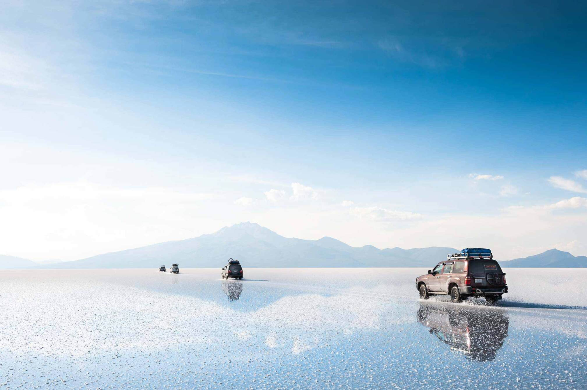
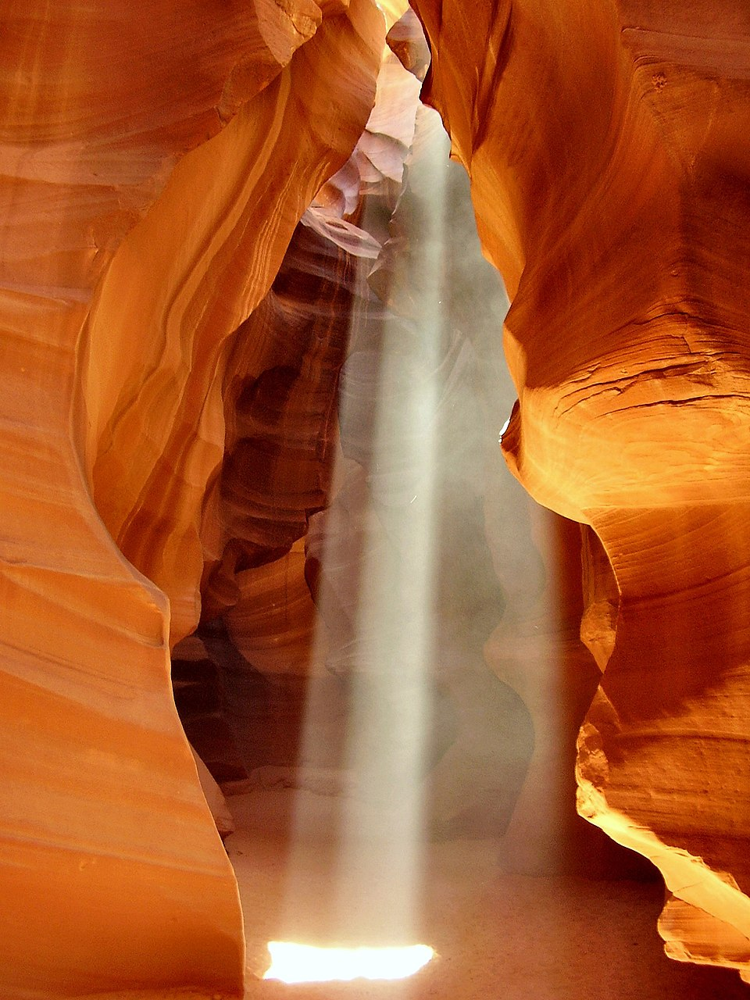

Salar de Uyuni
Bolivia: El desierto de sal más grande del mundo. Durante la época de lluvias, se convierte en el espejo natural más
grande del planeta, donde el cielo y la tierra se funden en uno solo. Emplazado en el sureste de Bolivia, el desierto de sal de Uyuni es
una de las maravillas naturales de Sudamérica que se extiende a lo largo de 10.582 km² en el departamento de Potosí, dentro de la región
altiplánica de la cordillera de los Andes. Concretamente a 3.656 metros de altitud, ocupa la extensión donde justo hace 40.000 años se
encontraba un lago prehistórico que se secaba estacionalmente, conocido primero como lago de Minchinnota y posteriormente de Tauca o Tauka.

Antelope Canyon
EE.UU: Un cañón de ranura esculpido por el agua durante miles de años. Sus paredes de arenisca naranja crean formas onduladas
y juegos de luces que parecen de otro mundo. Este cañón está situado en una reserva de indígenas navajos. De hecho, las visitas a este cañón han
de hacerse con un guía navajo.

Cataratas del Iguazú
Argentina/Brasil: Las Cataratas de Iguazú se localizan en una zona famosa por su riqueza natural, compartida por 3 países: Argentina,
Paraguay y Brasil. Esta maravilla está compuesta por 275 saltos, repartidos de forma poco equitativa: del lado argentino se concentra el 80%, mientras
que el 20% restante está del lado brasilero. Sin embargo, es casi obligatorio visitar ambos Parques ya que las vistas son distintas y complementarias.